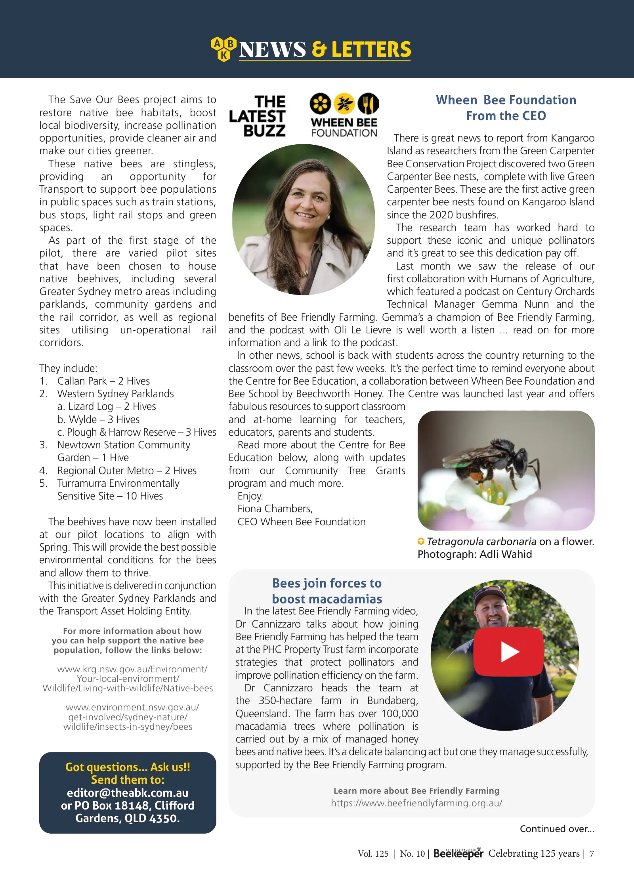

NEWS & LETTERS
Got questions... Ask us!!
Send them to:
editor@theabk.com.au
or PO Box 18148, Clifford
Gardens, QLD 4350.
Continued over...
Tetragonula carbonaria on a flower.
Photograph: Adli Wahid
The Save Our Bees project aims to
restore native bee habitats, boost
local biodiversity, increase pollination
opportunities, provide cleaner air and
make our cities greener.
These native bees are stingless,
providing
an
opportunity
for
Transport to support bee populations
in public spaces such as train stations,
bus stops, light rail stops and green
spaces.
As part of the first stage of the
pilot, there are varied pilot sites
that have been chosen to house
native beehives, including several
Greater Sydney metro areas including
parklands, community gardens and
the rail corridor, as well as regional
sites utilising un-operational rail
corridors.
They include:
1. Callan Park – 2 Hives
2. Western Sydney Parklands
a. Lizard Log – 2 Hives
b. Wylde – 3 Hives
c. Plough & Harrow Reserve – 3 Hives
3. Newtown Station Community
Garden – 1 Hive
4. Regional Outer Metro – 2 Hives
5. Turramurra Environmentally
Sensitive Site – 10 Hives
The beehives have now been installed
at our pilot locations to align with
Spring. This will provide the best possible
environmental conditions for the bees
and allow them to thrive.
This initiative is delivered in conjunction
with the Greater Sydney Parklands and
the Transport Asset Holding Entity.
For more information about how
you can help support the native bee
population, follow the links below:
www.krg.nsw.gov.au/Environment/
Your-local-environment/
Wildlife/Living-with-wildlife/Native-bees
www.environment.nsw.gov.au/
get-involved/sydney-nature/
wildlife/insects-in-sydney/bees
Wheen Bee Foundation
From the CEO
There is great news to report from Kangaroo
Island as researchers from the Green Carpenter
Bee Conservation Project discovered two Green
Carpenter Bee nests, complete with live Green
Carpenter Bees. These are the first active green
carpenter bee nests found on Kangaroo Island
since the 2020 bushfires.
The research team has worked hard to
support these iconic and unique pollinators
and it’s great to see this dedication pay off.
Last month we saw the release of our
first collaboration with Humans of Agriculture,
which featured a podcast on Century Orchards
Technical Manager Gemma Nunn and the
benefits of Bee Friendly Farming. Gemma’s a champion of Bee Friendly Farming,
and the podcast with Oli Le Lievre is well worth a listen ... read on for more
information and a link to the podcast.
In other news, school is back with students across the country returning to the
classroom over the past few weeks. It’s the perfect time to remind everyone about
the Centre for Bee Education, a collaboration between Wheen Bee Foundation and
Bee School by Beechworth Honey. The Centre was launched last year and offers
fabulous resources to support classroom
and at-home learning for teachers,
educators, parents and students.
Read more about the Centre for Bee
Education below, along with updates
from our Community Tree Grants
program and much more.
Enjoy.
Fiona Chambers,
CEO Wheen Bee Foundation
Bees join forces to
boost macadamias
In the latest Bee Friendly Farming video,
Dr Cannizzaro talks about how joining
Bee Friendly Farming has helped the team
at the PHC Property Trust farm incorporate
strategies that protect pollinators and
improve pollination efficiency on the farm.
Dr Cannizzaro heads the team at
the 350-hectare farm in Bundaberg,
Queensland. The farm has over 100,000
macadamia trees where pollination is
carried out by a mix of managed honey
bees and native bees. It’s a delicate balancing act but one they manage successfully,
supported by the Bee Friendly Farming program.
Learn more about Bee Friendly Farming
https://www.beefriendlyfarming.org.au/
Vol. 125 | No. 10 |
Celebrating 125 years | 7